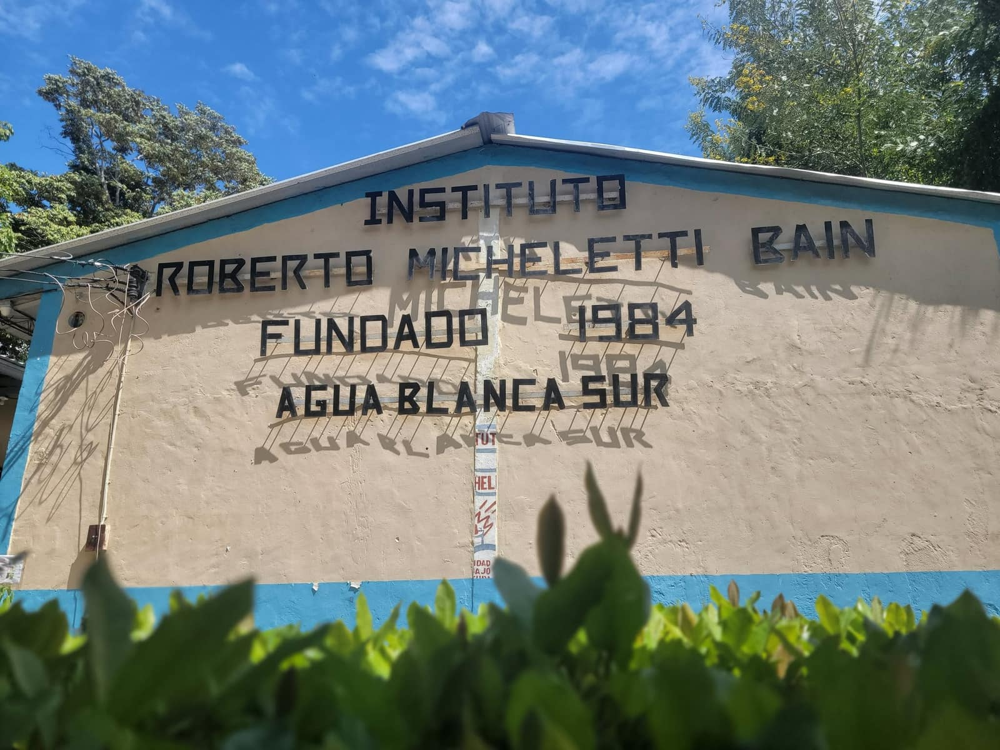
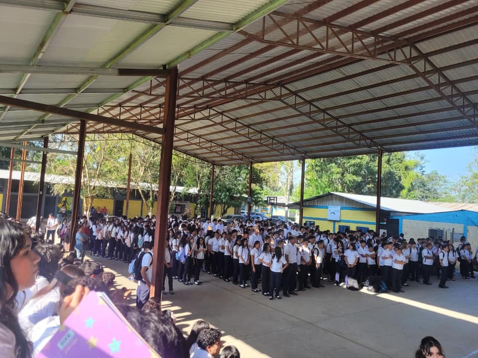
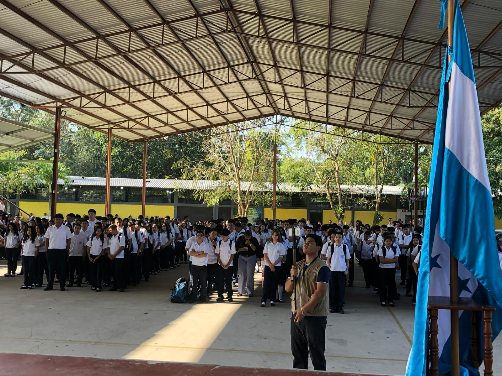
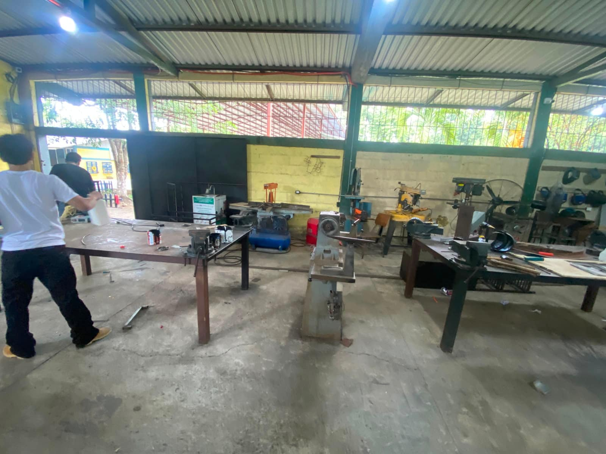
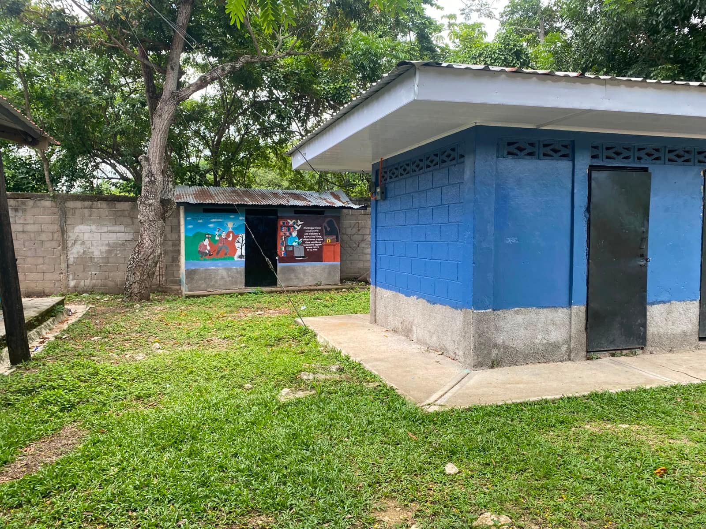

Talleres técnicos
Espacios de práctica para Estructuras Metálicas, Electricidad y Corte y Confección, donde los estudiantes del III Ciclo con orientación técnica desarrollan habilidades reales.
Nuestro campus
Conoce los espacios donde los estudiantes del Instituto Roberto Micheletti Baín aprenden, practican sus talleres técnicos y participan en la vida escolar.

Espacios del campus
El instituto cuenta con espacios pensados tanto para la formación académica como para la práctica técnica y la vida estudiantil.
Espacios de práctica para Estructuras Metálicas, Electricidad y Corte y Confección, donde los estudiantes del III Ciclo con orientación técnica desarrollan habilidades reales.

Equipo de cómputo para las clases del Bachillerato Técnico Profesional en Informática y para proyectos como la Feria de Inteligencia Artificial.

Espacio para actos cívicos, presentaciones y eventos institucionales que reúnen a toda la comunidad educativa.
Espacios donde se imparten las clases del III Ciclo de Educación Básica y de los tres bachilleratos del instituto.

Espacios para la práctica de fútbol y otras actividades deportivas y recreativas dentro del instituto.

Punto de encuentro para actos cívicos, formaciones y celebraciones especiales del calendario escolar.

Maquinaria y mesas de trabajo del taller de Estructuras Metálicas, donde los estudiantes practican con herramientas reales.

Servicios sanitarios distribuidos en el campus para la comunidad estudiantil.
Jardines y zonas arboladas que rodean las aulas, cuidados por la propia comunidad educativa.
La mejor forma de conocer nuestras instalaciones es visitándonos durante el período de matrícula o contactando a Secretaría.